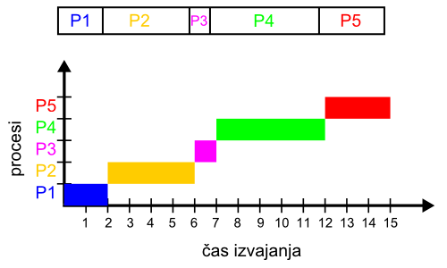
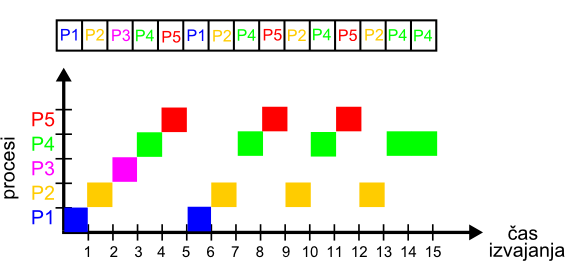

Licenca
To delo je na voljo pod pogoji slovenske licence Creative Commons 2.5:
priznanje avtorstva - nekomercialno - deljenje pod enakimi pogoji.
Celotna licenca je na voljo na spletu na naslovu http://creativecommons.org/licenses/by-nc-sa/2.5/si/. V skladu s to licenco je dovoljeno vsakemu uporabniku delo razmnoževati, distribuirati, javno priobčevati, dajati v najem in tudi predelovati, vendar samo v nekomercialne namene in ob pogoju, da navede avtorja oziroma avtorje in izdajatelja tega dela. Če uporabnik delo predela, kar pomeni, da ga spremeni, preoblikuje, prevede ali uporabi to delo v svojem delu, lahko predelavo dela ponudi na voljo le pod pogoji, ki so enaki pogojem iz te licence oziroma pod enako licenco.

Kaj je proces
Se še spomniš primera pisanja in tiskanja besedila v učni enoti Operacijski sistem? Če si pozabil(-a), ga še enkrat hitro preglej!
Obravnavali smo programe, a malce poenostavljeno. Dejansko si programe lahko predstavljamo kot recepte za kuhanje, ki sami po sebi ne pripravijo slastne jedi. Slastno jed dobimo šele, ko recepte uporabimo in v skladu z njimi iz sestavin skuhamo jed. Podobno programe uporabimo (zaženemo) v računalniku. Ko se program prične izvajati, pa ne govorimo več o programu, ampak o procesu. Proces je zaključena enota izvajanja programa, vključno z vrednostmi njegovih spremenljivk. Isti recept lahko hkrati uporabimo v dveh procesih, enako kot se lahko v dveh procesih izvaja isti program.
Ko smo govorili o izvajanju programov, nas je zanimalo tudi, katere funkcije izvaja operacijski sistem, medtem ko čaka na novi ukaz (takrat smo govorili o pritisku tipke). Računalnika dejansko ne uporabljamo samo za eno opravilo naenkrat. Če bi ga uporabljali samo za eno opravilo naenkrat, bi kar nekaj časa čakali na dokončanje prejšnjega opravila. Tako zaporedno izvajanje opravil imenujemo zaporedni ali paketni način obdelave.

Primer zaporedne obdelave opravil.
V računalniku se paketni način običajno ne uporablja. Oglejmo si primer, kako je dijakinja Maja včeraj popoldne uporabljala računalnik:
Najprej je izdelala videoposnetek šolske predstave, ki ga želi izvoziti v določenem formatu. Izvoz traja kakšno uro. Medtem piše nalogo v urejevalniku besedila, ima hkrati odprt brskalnik, s katerim išče informacije. Vmes občasno preveri morebitne zanimivosti v družabnih omrežjih. Nalogo shranjuje na priklopljen USB-ključek, medtem ko se video shranjuje na disk. Odjemalec elektronske pošte vsake toliko preveri, ali je prispela nova pošta, in jo o tem obvesti. V tem času se mimo Majine sobe sprehodi Majin brat z mobilnim telefonom, v katerem je omogočena povezava Bluetooth. Majin računalnik prepozna bratov telefon.
V računalniku torej poteka hkrati precej opravil, ki se izvajajo v različnih procesih (programih v izvajanju). Pa se res procesi izvajajo hkrati? No, lahko se, če ima naš računalnik več procesorjev ali več jeder. Vendar praviloma je število procesov, ki se želijo hkrati izvajati, mnogo večje od števila procesorjev in jeder v našem računalniku. Zato se procesi dejansko ne izvajajo hkrati. Če primerjaš spodnji sliki v času med 0 in 5, je videti, kot da se v prvem primeru izvajata le dva procesa, medtem ko se v drugem primeru izvaja vseh pet. Ta navidezna vzporednost nam da kvečjemu občutek, da se procesi izvajajo hitreje. Operacijski sistem namreč vsakemu procesu, ki naj bi se izvajal, dodeli (ang. schedule) CPE za določen čas. Pravimo, da operacijski sistem preklaplja med procesi. Ker pa to poteka zares hitro, uporabnik preklapljanja sploh ne zasledi. Tak način imenujemo večopravilen način (ang. multitasking) v obliki dodeljevanja časa (ang. time-sharing). Primer večopravilne obdelave opravil prikazuje slika spodaj:
